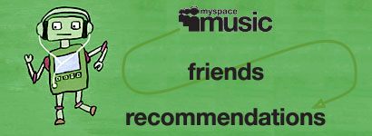
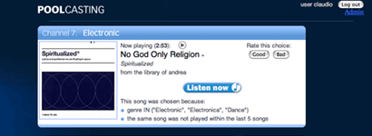
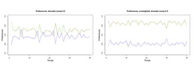

-
MySpace Robot
2009—I have helped MySpace listeners find new and hidden bands that sound like music they already know. Download the Python library here and try it by yourself.
-
Poolcasting Radio
2007—I have enabled friends to listen to online radio channels customised for their preferences, without the need for a DJ. Download the Ruby on Rails evaluation package here.
-
Fuzzy music genres
2008
I have uncovered fuzzy affinity among artists that beyond Boolean categories such as genres and tags. Read about the analysis here and download the R code here.
-
Iterated social choice
2009—I have developed a new method to aggregate the different preferences of persons wishing to experience together. Read about the evaluation here and download the R code here.